Photo cleaner for iPhone · Launching September 24
Keepick finds every one of them, groups them into one small pack, and lets you keep the good frame with a swipe. The whole search runs on your phone — no account, no upload, no server behind it.
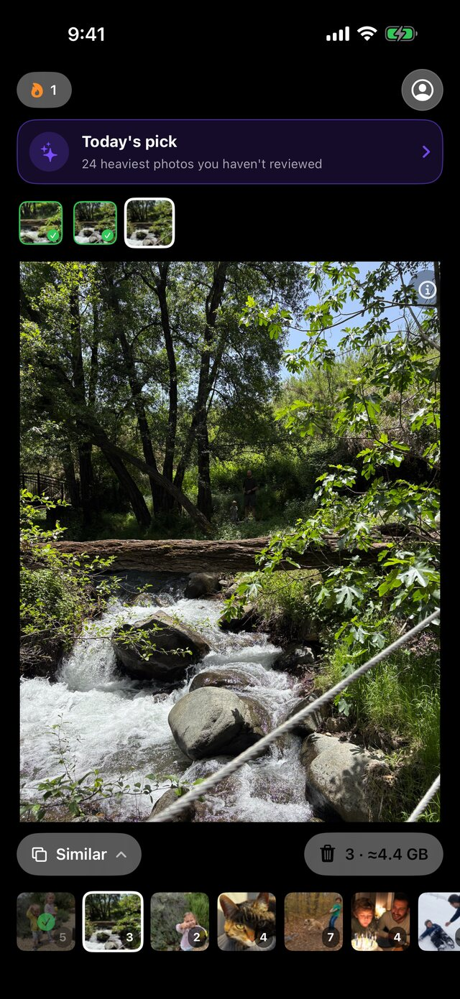
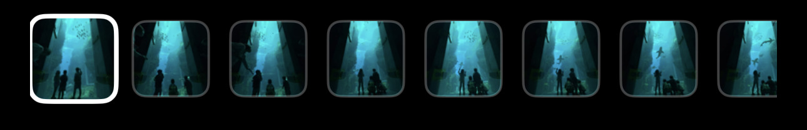
Three passes over the library, each catching what the one before it cannot. All of them run on the device, with Apple's own frameworks.
Catches frames that are literally the same picture: the re-save, the screenshot of a screenshot, the copy a messenger made on the way.
Compares what is in the frame rather than its pixels. This is the burst where someone blinked in three shots out of five.
Every photo against every other one, so a crop you made in 2019 still lands next to the original it came from.
Not a list of nine thousand files to audit. A queue of small decisions, each one showing what it frees.
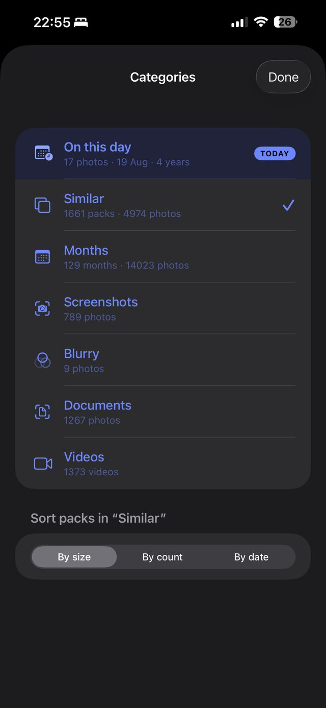
Similar shots, whole months, screenshots, blurry frames, documents, videos. Packs come sorted by what frees the most, so the first swipe is the one that counts.
The numbers on that screen are one real library, untouched: 1,661 packs of similar photos in 4,974 shots.
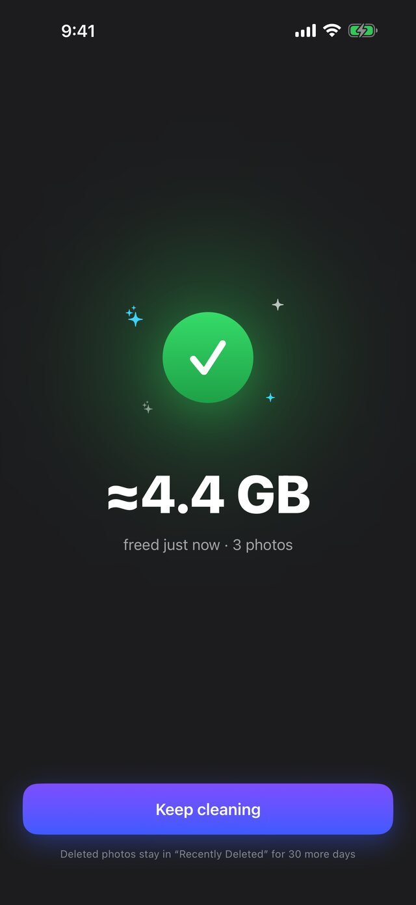
Every decision is counted, and the trash is emptied through the system dialog — nothing leaves your library behind your back, and everything stays recoverable for 30 days.
When the library lives in iCloud Photos, Keepick shows how much of the freed space actually sat on the iPhone, instead of adding two numbers that overlap.
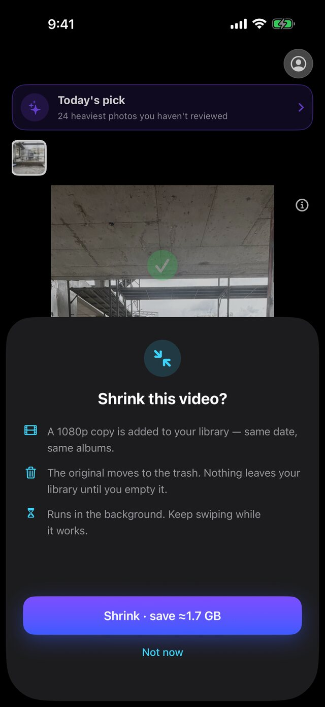
Keep the moment as a 1080p copy and let the original go — same date, same albums. On a long clip that is most of the file, and the footage is still there.
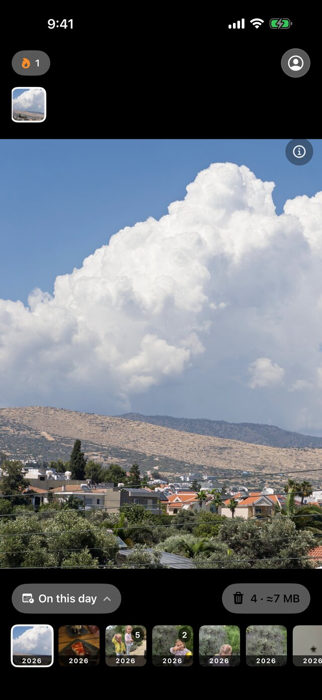
The same library read differently: what you photographed on this date in past years, waiting as a small pack. It has a Home Screen widget, and it is the reason anyone comes back to a cleaning app at all.
This is not a promise about our servers. There are no servers.
The matching runs with PhotoKit, Vision and Core Image on the phone itself. Nothing is uploaded, there is no account to create and no library to sign into. Keepick works in airplane mode.
The App Store preview: a pack of similar shots, a swipe each, the trash, and the number at the end.
The App Store set, in order. Scroll sideways.
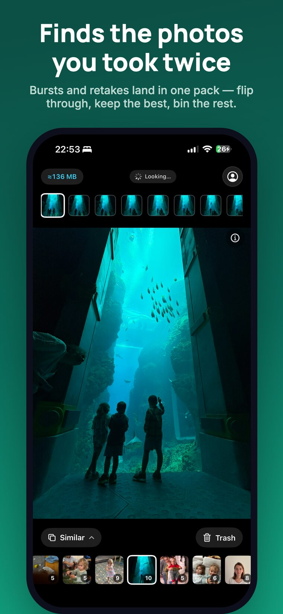
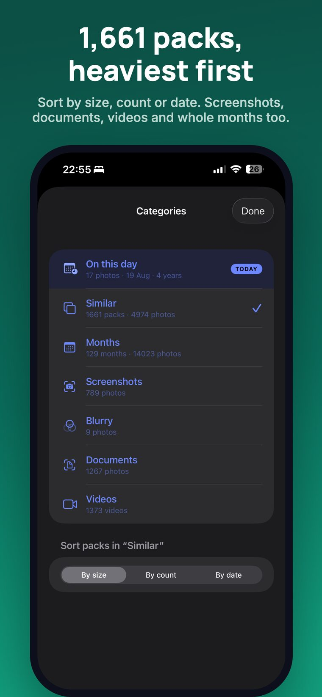
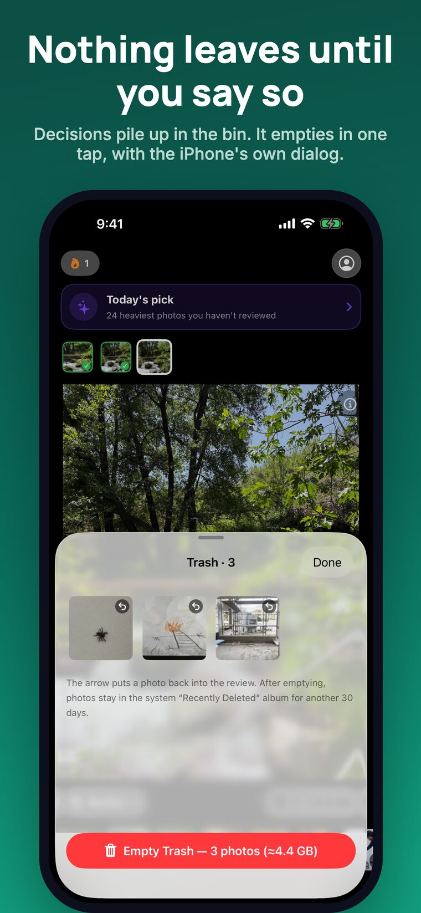
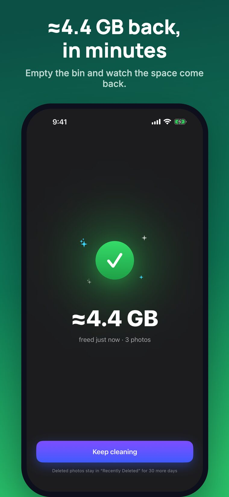
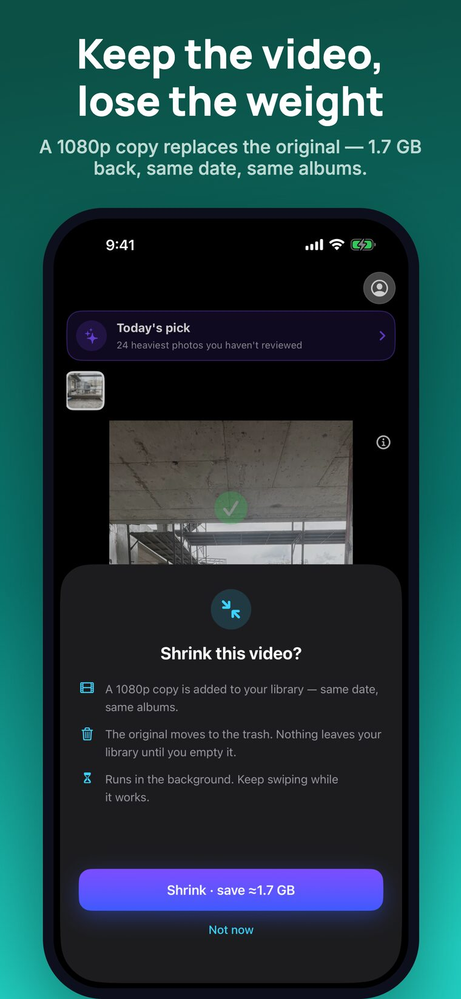
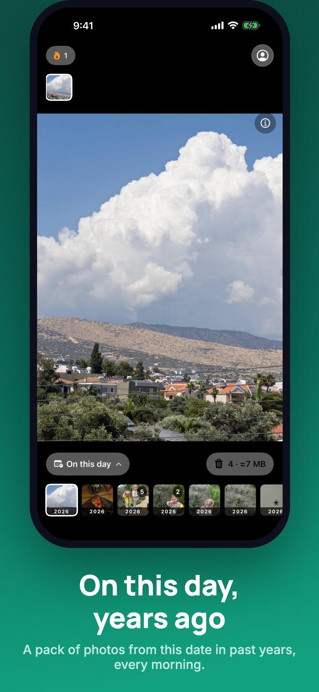
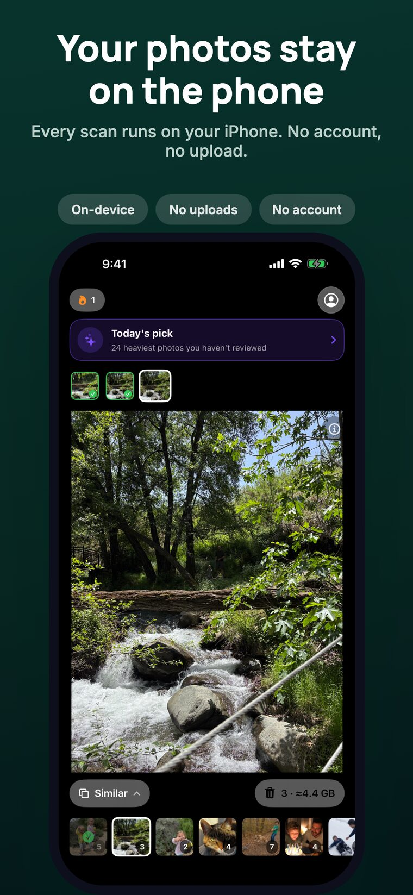
iPhone, iOS 26 or later. The first 20 cards are free; Keepick Pro is $4.99 per week or $39.99 per year and lifts the limit.